.
.
Derivation (golden rule)
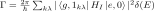
with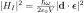
. The number of modes per polarisation in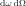
is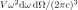
, and summing over the two polarisations and all directions gives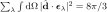
. Collecting factors (the volume cancels):
cancels):
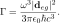
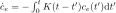
with a kernel of width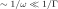
(Markov):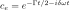
(Weisskopf and Wigner 1930). The Fourier transform of the emitted field is a Lorentzian of FWHM ;
; 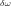
is a (divergent, renormalised) frequency shift: the Lamb shift.Purcell effect
Replace the free-space mode density by a single cavity mode of quality  and volume (Lorentzian density
and volume (Lorentzian density
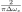
) (Purcell 1946). For an emitter on resonance, at the field maximum and aligned: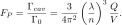
Worked example
InAs quantum dot in a GaAs micropillar:
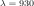
nm, ,
, 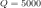
,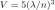
: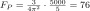
. A 1 ns radiative lifetime becomes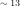
ps, and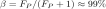
of photons go into the cavity mode.Engineering applications
Fast single-photon sources, thresholdless nanolasers (
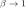
), LED extraction and modulation speed, suppression of spontaneous emission in photonic band-gap structures, plasmonic nano-antennas.Pitfall
is set by
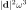
for a given local density of optical states; quoting a lifetime without the environment (refractive index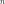
multiplies by in a homogeneous medium) is incomplete.